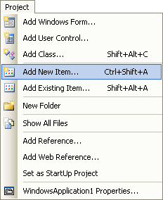
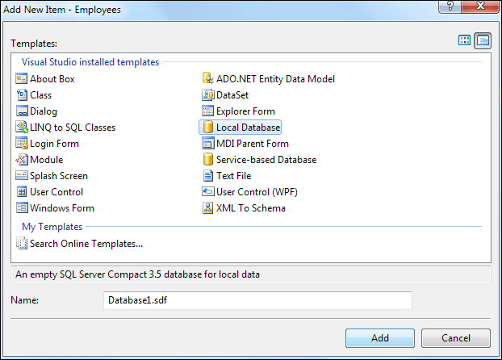
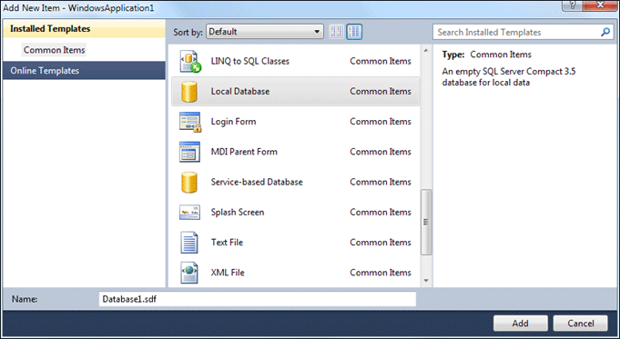
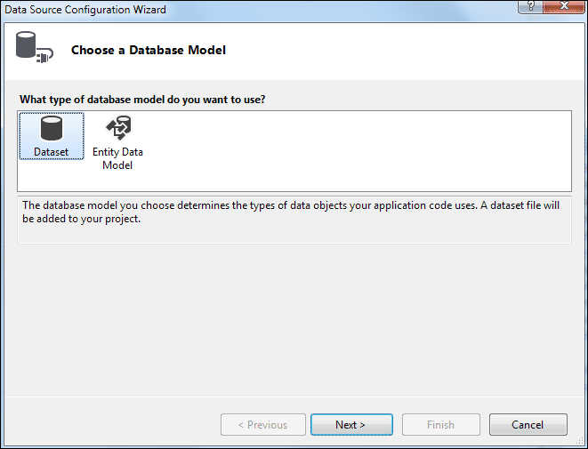
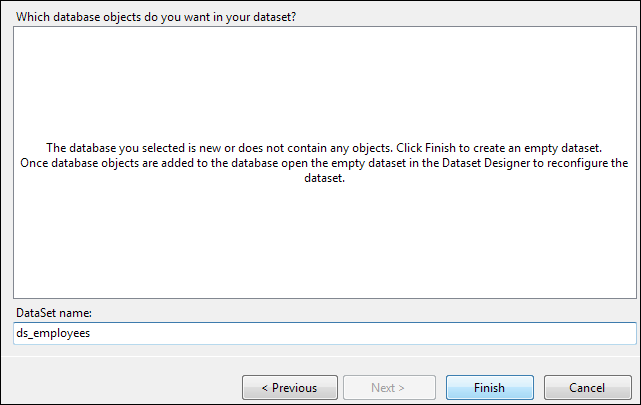
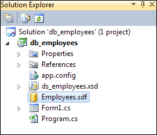

How to Create a Compact SQL Server Database in C# .NET
Start a new project, and call it anything you like as we're only using this project to create a database. From the menu at the top, click on Project > Add New Item.

From the Add New Item dialogue box in version 2008, look for the Local Database item, as in the image below:

In C# 2010, you'll see this dialogue box (the 2012 version is similar only less colourful):

Again, select Local Database.
If it's not there, then you may not have SQL Server Express installed. In which case, you need to download it. At the time of writing, the location is:
http://www.microsoft.com/sql/editions/express/default.mspx
If you see the Local Database item, click on it to select it. Note the file ending for a SQL Server Compact database, though - it's an SDF file. Change the name to this:
Employees.sdf
Now click the Add button. You should, eventually, see the Data Source
Configuration Wizard appear. This one in version 2008:

Put a tick in the box next to Tables, and then change the name of the dataset to this:
ds_employees
In version 2010 and 2012 of the software, you'll see this instead:

Select Dataset, then click Next. You'll then see this:

Again, change the name of the Data Set to ds_employees.
Click the Finish button.
It might look as though nothing has happened, after you click the Finish button. But have a look at the Solution Explorer at the top right of your screen. You should see your database there:

When you save your project, the database will get saved along with all the solution files.
In the next part below, you'll learn how to create tables in your SQL Server
Database,